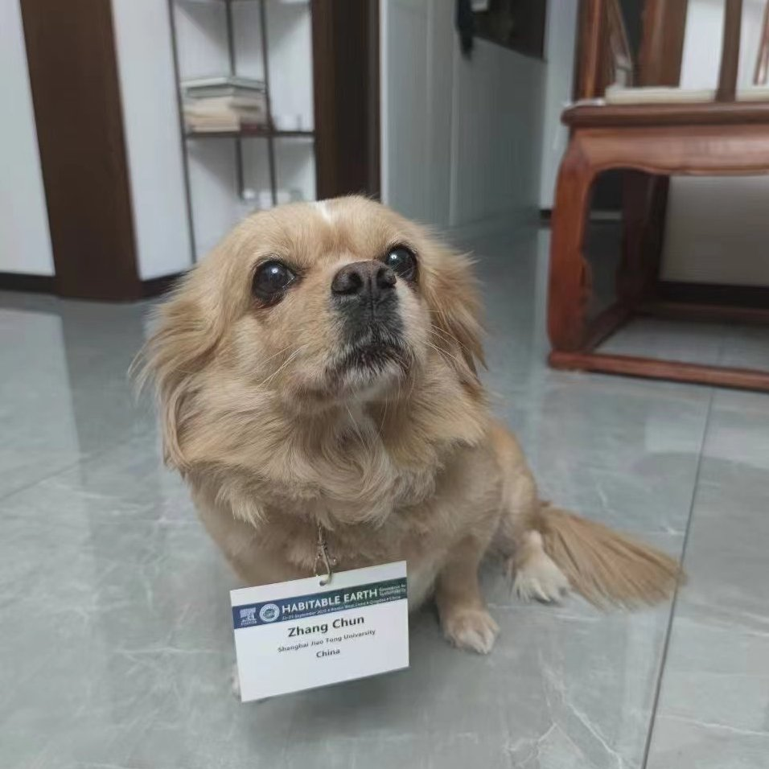

Chun Zhang
caydezc3182@sjtu.edu.cn
Shanghai Jiao Tong University
Education
Shanghai Jiao Tong University
Shanghai, China
M.S. in in Fluid Mechanics, GPA: 3.75/4.0.
Sep 2021 – Mar2024(Expected)
Tongji University
Shanghai, China
B.S. in Engineering Mechanics, GPA: 3.74/4.0 (4.67/5.0).
Sep 2017 – Jul 2021
Research
Shanghai Jiao Tong University
Master's Degree Candidate, supervised by Prof. Chao An
Theory and Model
- Investigated how seafloor deformation and wave forces jointly impact OBS responses, refining noise mechanisms and characteristics.
- Proposed a novel noise model for horizontal noise components, enabling quantitative analysis and providing a more accurate representation of real horizontal noise.
Application and Methodology
- Developed and implemented a horizontal noise-removal method, achieving 10-20 dB reduction in typical cases.
- Proposed a method to clarify wave direction from models, confirming waves propagating away from the shore, suggesting potential infragravity waves.
- Proposed the use of horizontal noise in subsurface structure inversion, conducted preliminary inversion, and discussed method improvements.
Data processing
- Developed scripts and code for shallow-water OBS data analyzing, validating noise models and related theories, and implementing proposed applications such as noise removal and inversion (primarily using Python, Fortran, and SAC, on the data from Cascadia Initiative).
- Processed and optimized data from East China Sea buried OBS experiment, synchronizing timing and reducing three-component noise.
- Processed data from tank OBS noise experiments, verifying the correlation between water waves and noise.
Field and Experimental Work
- Designed and executed wave tank OBS noise experiments, collected and analyzed data.
- Participated in the field deployment of the "First Comprehensive Natural Disaster Risk Survey of Shanghai," installing 82 seismometers in Jiading District.